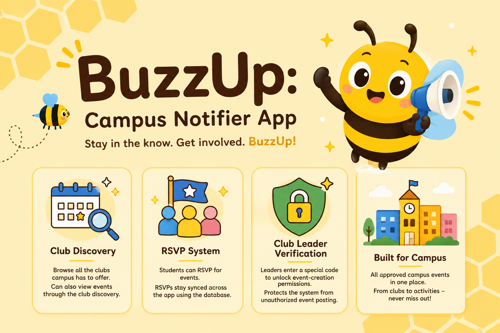

Case Study
BuzzUp
Never miss what's happening on campus.
Live · Adopted by 20+ SNHU Students
The Problem
SNHU students hear about campus events through scattered flyers, club group chats, and word of mouth, with no single place to browse what's happening, follow specific clubs, or get reminded before an event starts. BuzzUp centralizes campus events and club activity into one app, with RSVPs, check-ins, and notifications built around how students actually discover things on campus.
My Role
BuzzUp was built with one teammate as a two-person project. My work spanned the Supabase schema and row-level security policies, the Firebase authentication integration, the club-verification and QR check-in flows, and the automated test suite.
Key Technical Decisions
- Firebase for identity, Supabase for everything else. Firebase Authentication issues each user's identity, which is then used as the join key into Supabase tables for clubs, events, RSVPs, and check-ins — auth and application data are deliberately split across two purpose-built services instead of forcing one to do both.
- QR check-in reuses the existing club-trust check. Generating or scanning an event's check-in QR code is gated by the same "verified club member or admin" check already used to decide who can post events for a club, so a new feature didn't need a new trust surface. The check-in window opens 30 minutes before an event starts and stays open for the rest of the day.
- Personal event-conflict detection. Before a student RSVPs, the app checks their existing RSVPs for anything within a 2-hour window of the new event and warns them by name, instead of silently letting them double-book themselves.
- An actual automated test suite. Unlike a lot of solo portfolio projects, BuzzUp has a Vitest suite covering check-in logic, event conflicts, event validation, friend requests, moderation, notifications, recommendations, and the campus map — a regression safety net that's easy to skip under a deadline.
Challenges & Solutions
Club-leader verification needed to stop anyone from posting events under a club's name, without building a separate manual-approval queue for every club on campus. Verification is code-based: a club shares a join code with its real leadership, and entering the right club name plus code links a student's account to that club. That same membership check then gates who can create events, generate check-in QR codes, and view check-in analytics for that club — so one verification step unlocks the right permissions everywhere instead of being re-checked ad hoc per feature.
Status & What's Next
BuzzUp is live and in use: 20+ SNHU students have adopted it for RSVPs, club follows, and event check-ins, running against a live Supabase backend with Firebase authentication and push notifications through Expo.